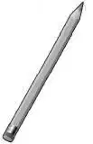

Good News
维莉和班尼骑自行车去海家的那天，正值图书馆开放日。杰西和亨利有其他安排，不能一起去。塞米和小杰正等候着他们，并带好了笔记本和铅笔。

“跟在我们后面，”班尼说道，“我们来带路。”
不一会儿，四个孩子便来到绿野镇公共图书馆前，对于一个小镇来说，这个图书馆算是很大了。他们锁上了车子。
瓦特夫人每次见到奥登家的孩子都很高兴，她和蔼地笑着问道：“班尼，我知道你想看什么，是关于科学和侦探类的书，对吧？你的新朋友呢，也喜欢侦探类的吗？”
“是呀，不过——”塞米和小杰异口同声地回答道。接着小杰继续说：“我们身边已经发生了一个真正的侦探故事啦！这就是我们来这儿的原因。”
随后，班尼告诉了瓦特夫人那个密室的故事。他说：“我们很想弄清楚一件怪事，为什么那间小屋被封了起来？”
“这可真是个谜团啊！”瓦特夫人惊呼道，“希望我可以帮到你们，不过我可不敢打包票。幸运的是，你们已经知道了那个日期——1910年。跟我来吧，给你们一些现有的资料，或许能找到一些线索。”
瓦特夫人领着孩子们来到图书馆的另外一间房子里。
“经常有人来这儿了解绿野镇的过去，这里几乎收藏了小镇的所有历史，”她自豪地说，“我们还收集了一些很有趣的东西呐，比如读者来信，以及一些旧书和报纸。现在我们来看看，该从哪儿开始呢？”
这时，维莉说道：“我觉得，绿野镇的旧报纸或许能帮到我们。拥有海之屋的卡韦家族，当时可是显要的名门望族。”
“很好的开头，”瓦特夫人认同地说，“我们有一些旧报纸装订成的大书，你们沿着这张长桌子坐下来，我去拿过来。你们可以从1910年的6月、7月、8月开始找。”


不一会儿，瓦特夫人就把一些大书放到了桌子上。她看了一眼塞米，问道：“你会读报纸吗？这可不简单哦。”
小杰回应道：“塞米什么都会读。”当发现果然如此时，瓦特夫人惊讶极了。
瓦特夫人离开后，房里陷入了一片静谧，几个孩子完全沉浸到旧报纸中去了。
“这里，”塞米低声细语地说，“快看这儿——首页上有关于这个图书馆的故事：1910年6月5日首次开业。”

“这儿有关于一场大火的报道，”班尼说，“一家木材厂被烧了个精光。记载中说木材厂是卡韦家的，我猜他们当时真的是显贵家族。”
“我在看其他一些版面，记录了来访的邻居和举办派对的事，”维莉说道，“或许从这里我们能看到关于威廉奶奶的一些报道。”
小杰和塞米浏览了好几页，不过愣是没找到任何线索。
突然，维莉低语道：“在这儿！提到了A·M·卡韦夫人……哦，只是参加教堂妇女的一次联盟会议罢了，帮不了我们。”

孩子们开始感到疲惫了，一是因为旧报纸上的字太小，很难读；二是事情并没有他们想象中的顺利。即使如此，也没有人想要放弃。
正在这时，瓦特夫人走了进来。
“你们找到什么没有？”她问道。
突然，小杰的呼吸变得急促起来，他急切地说：“听着，报纸上是这样说的。”紧接着他读了一则告示：
“A·M·卡韦夫人正在接待她来此度夏的孙子威廉。威廉是约瑟夫的儿子，约瑟夫在英国伦敦拥有煤矿开采企业。威廉会在今年8月回到父母家。”
“天哪，真有你的！”维莉说道，“小杰，你找到了第一条有用的信息。”
班尼看着7月份的报纸，说道：“这儿有个关于威廉生日派对的小消息——的确是麦格雷戈太太记得的那个派对。”
塞米说道：“我们找找看，有没有关于威廉回家的报道。查看8月份的报纸吧。”
四个孩子尽可能快地翻看着报纸。
班尼发现了新线索，他读道：“这周，约瑟夫·卡韦夫妇来到绿野镇，将儿子接回英国。他们带着A·M·卡韦夫人一起离开，永久定居在英国。卡韦家的房子租给了大卫·约翰逊夫妇，他们9月就会搬进来，约翰逊家有5个孩子。”
“真是大发现啊！”班尼兴奋地说，“我们以前不知道，除了卡韦家和海家，还有其他人住过海之屋呐！”
“现在知道还有约翰逊家了。”维莉说道。
“他家还有5个孩子。”小杰说。

塞米突然说道：“大家都静一静，让我想想！刚才我有个想法，不过又忘了……现在想起来啦！假如，卡韦夫人不想让5个陌生的孩子碰威廉的所有玩具，会怎么做？我敢打赌，她会封上那间屋子，让它隐藏起来，不被任何人发现。”
班尼慢慢地琢磨道：“嗯，有这个可能，至少在我们之前，的确没有任何人发现它。没有更好的解释了。”
维莉说道：“我觉得，不能指望在这儿找到更多线索了，没人会在报纸上登出那间密室吧？那可是个秘密。”
“我们一起和那个好心的图书管理员说说我们找到的新闻吧，”塞米说道，“我把它抄在本子上啦。”
瓦特夫人听了孩子们的诉说后，满心欢喜。
“以后再来啊，”她笑着说，“塞米，你很会读书呐！”
“我会再来的，”塞米说道，“我还想找一本关于月球的书呢。”
“我们这儿有很多，”瓦特夫人微笑着说，“到时我挑一本难的给你看。”
维莉、班尼、小杰和塞米骑自行车回家的路上，塞米说：“我们被那间神秘小屋搞得太兴奋了，树屋都还没完工呢。”
“我们可以午饭后把它建完。”小杰回应道。
班尼说道：“你负责安装灯、邮筒和绳梯吧。”
那天下午晚些时候，塞米说：“真希望爸爸妈妈现在就回来，我等不及把图书馆的事告诉他们啦。”
小杰说道：“我一直在想马克斯叔叔。如果我们告诉他，约翰逊和他的5个孩子，他有可能会记起更多的事儿。我很想知道塞米的猜测是不是对的。”
当海夫妇回到家时，发现树屋已经建好，后院也收拾干净了。

“你们究竟有没有去图书馆呢？”海夫人问道，“快过来，和我说说。”
孩子们走进客厅，坐到地板上。
“噢，妈妈，一切都很顺利！”塞米说道，“你听听这个就好啦。我们在旧报纸上找到的。”他掏出笔记本，读了起来。
海先生听完后，说道：“我从没听说过约翰逊一家，不知道马克斯是不是了解，或许他也忘了。你们想晚饭后去他那儿问问吗？”
小杰脸上洋溢着幸福的神情，说道：“哇，爸爸，这可是我们的心愿。”
塞米却一反常态，沉默不语地陷入了沉思。突然，他兴奋地叫道：“我想到了一个超级无敌的好主意！马克斯叔叔的餐厅可以叫‘摇摆木马’！我们可以把大木马搬过去，供小孩们参观，不过不能骑上去，因为木马太旧了。只要小朋友们想去，爸妈就一定会带他们去，这样餐厅的生意就会变得好起来。”
班尼赞成道：“这是目前最棒的想法啦！要是有家叫‘摇摆木马’的餐厅，我都想去呢！”
“我也是呢。”海夫人同意道。
但是小杰有点犹豫：“爸爸，密室里的玩具能属于我们吗？”
“当然了，”爸爸回答说，“我买下了这栋房子，包括里面所有的物品以及周边的土地。所以呢，如果你想把玩具送给马克斯叔叔，就大可以放心地送给他。但是，马克斯叔叔有可能不会喜欢这个想法。”
“海先生，我想他会喜欢的，”班尼说道，“他很乐意尝试新事物。”
这时，维莉说了一句：“我们要回家了，该吃晚饭啦。”
海夫人说：“等你们再过来的时候，我们一起开车去马克斯叔叔那儿。现在，密室之谜已经是大家共有的谜团啦。”